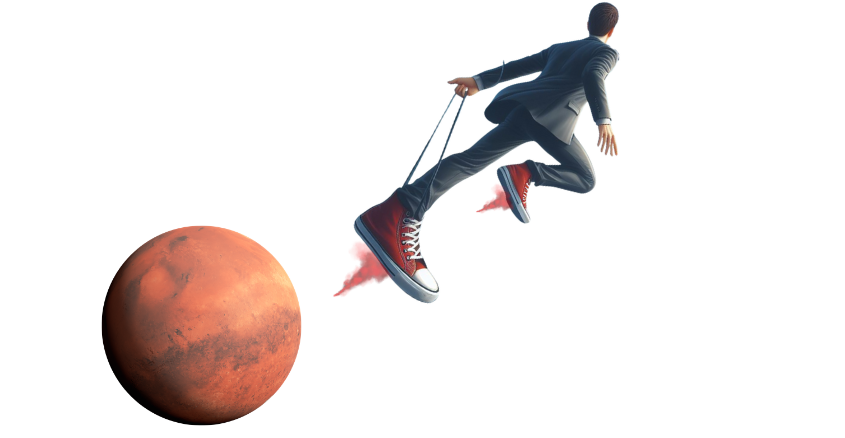

Os benefícios que um sapato voador incluem:
- Mobilidade elevada: Permite voar e superar obstáculos terrestres rapidamente.
- Economia de tempo: Reduz o tempo de deslocamento, especialmente em áreas congestionadas.
- Experiência única: Proporciona uma sensação de liberdade e aventura inigualável.
- Versatilidade: Pode ser utilizado em diversas situações, desde viagens recreativas até deslocamentos diários.
- Sustentabilidade: Dependendo da tecnologia, pode ser uma opção de transporte mais ecológica em comparação com veículos motorizados.
- Exclusividade: Possuir um sapato voador pode ser uma forma de se destacar e atrair a curiosidade das pessoas ao seu redor.
- Diversão: Além de funcional, é uma fonte de entretenimento e diversão, tornando os deslocamentos mais agradáveis.
Descubra a magia do voo com o 'alto voo: o sapato das alturas'. Este sapato revolucionario combina design elegante com tecnologia avançada de propulsão para proporcionar uma experiência de voo única. Feito com materiais leves e resistentes, ele permite que você explore
o mundo de uma perspectiva totalmente nova, elevando-se acima das multidões e navegando pelos céus com facilidade e estilo. Seja para uma aventura emocionante ou para escapar do trânsito urbano, o 'Alto voo' é o companheiro perfeito para aqueles que sonham em voar.
PROMOÇÃO RELÂMPAGO!
De R$ 2.500,00 Por
R$ 1.749,99